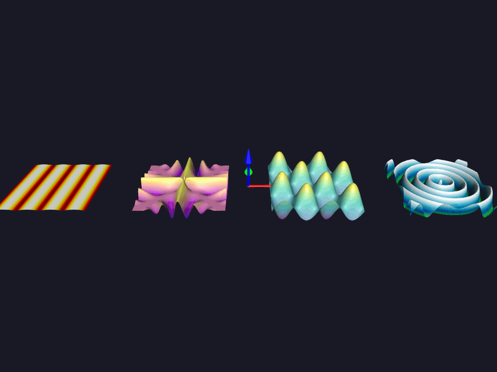

Note
Go to the end to download the full example code.
Animated 2D Functions#
This is a simple demonstration of how one can animate 2D functions using FURY. It covers real-time evaluation and rendering of 3D surface meshes from mathematical formulas.
Importing necessary modules
import numpy as np
from fury import actor, colormap, ui, window
Let’s define some variable and their description:
- N_POINTS: int
Grid resolution dimension per axis. Determines the number of coordinate samples. (default = 128)
- SPACING: float
The physical layout gap layout distance used to separate the surface actors along the X-axis. (default = 3.0)
- state: dict
A global container tracking global execution time and time step changes: - time: initial value of the timeline clock state (default = 0.0). - dt: amount by which time is incremented every iteration (default = 0.05).
Generating a flat coordinate grid mapping and initializing the global animation state.
Equations to be plotted within an isolated NumPy namespace.
eq1 = "np.abs(np.sin(x*2*np.pi*np.cos(time/2)))**1*np.cos(time/2)\
*np.abs(np.cos(y*2*np.pi*np.sin(time/2)))**1*np.sin(time/2)*1.2"
eq2 = "((x**2 - y**2)/(x**2 + y**2 + 1e-5))**(2)*np.cos(6*np.pi*x*y-1.8*time)*0.24"
eq3 = "(np.sin(np.pi*2*x-np.sin(1.8*time))*np.cos(np.pi*2*y+np.cos(1.8*time)))*0.48"
eq4 = "np.cos(24*np.sqrt(x**2 + y**2) - 2*time)*0.18"
equations = [eq1, eq2, eq3, eq4]
List of colormaps to be used for the various surface functions.
cmap_names = ["hot", "plasma", "viridis", "ocean"]
Functions to construct grid face topology maps and evaluate the wave equations.
def generate_grid_faces(n):
"""
Generate continuous index faces for 3D surface mesh generation.
FURY meshes require explicit structural layout rules to bind points into
triangular connectivity collections.
"""
faces = []
for i in range(n - 1):
for j in range(n - 1):
p0 = i * n + j
p1 = i * n + (j + 1)
p2 = (i + 1) * n + j
p3 = (i + 1) * n + (j + 1)
faces.append([p0, p1, p2])
faces.append([p1, p3, p2])
return np.array(faces, dtype=np.int32)
def evaluate_equation(equation, x, y, t):
"""Evaluate math equations dynamically using string expressions."""
return eval(equation, {"np": np, "x": x, "y": y, "t": t, "time": t})
Geometry update routine to modify active vertex and color buffers directly.
Instead of deleting and recreating actors inside execution loops, we modify the underlying buffer properties in-place via .data[:, :] and notify the rendering pipeline using .update_full().
def update_surface_geometry(surf, x, y, t):
"""Update existing GPU buffers directly to maintain rendering performance."""
z = evaluate_equation(surf.equation, x, y, t)
xyz = np.vstack([x, y, z]).T
v = np.copy(z)
max_val = np.max(np.abs(v))
v /= max_val if max_val > 0 else 1.0
colors = np.asarray(colormap.create_colormap(v, name=surf.cmap_name))
if colors.ndim == 2 and colors.shape[1] == 3:
colors = np.hstack([colors, np.ones((len(colors), 1), dtype=colors.dtype)])
# Zero-allocation buffer array mutations
surf.geometry.positions.data[:, :] = xyz.astype(np.float32)
surf.geometry.positions.update_full()
surf.geometry.colors.data[:, :] = colors.astype(np.float32)
surf.geometry.colors.update_full()
Creating a scene object and configuring the viewport environment layout.
Custom user state information variables are assigned directly onto the generated surface actor references. Positions are shifted using local coordinates.
scene = window.Scene()
scene.background = (0.1, 0.1, 0.15)
scene.add(actor.axes())
faces = generate_grid_faces(N_POINTS)
surfaces = []
for i in range(4):
xyz_init = np.vstack([x_flat, y_flat, np.zeros_like(x_flat)]).T
colors_init = np.ones((len(x_flat), 4), dtype=np.float32)
surf = actor.surface(xyz_init, faces=faces, colors=colors_init)
surf.equation = equations[i]
surf.cmap_name = cmap_names[i]
# Stagger surface layouts along the X axis using localized spatial shifts
surf.local.position = (i * SPACING - 1.5 * SPACING, 0.0, 0.0)
scene.add(surf)
surfaces.append(surf)
Initializing 2D Text Block overlays to display the animation legend.
hud_legend = ui.TextBlock2D(
text="Fury Animated 2D Functions\n"
"F1: Standing Wave | F2: Hyperbolic | F3: Wave Packet | F4: Concentric Ripples",
position=(30, 30),
font_size=16,
color=(0.9, 0.9, 0.95),
bold=True,
dynamic_bbox=True,
)
scene.add(hud_legend)
Initializing showm and camera parameters
show_m = window.ShowManager(
scene=scene, size=(1024, 768), title="Fury Mathematical Functions"
)
camera = show_m.screens[0].camera
camera.local.position = (0.0, -8.0, 5.0)
camera.look_at((0.0, 0.0, 0.0))
def update_playback_frame():
"""Timer callback function executed continuously by the event tracker."""
state["time"] += state["dt"]
for surf in surfaces:
update_surface_geometry(surf, x_flat, y_flat, state["time"])
Run every 30 milliseconds
show_m.register_callback(update_playback_frame, 0.03, True, "FunctionsLoop")
show_m.start()

Total running time of the script: (0 minutes 28.031 seconds)